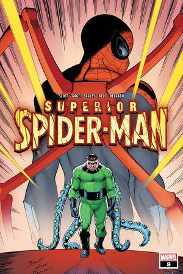
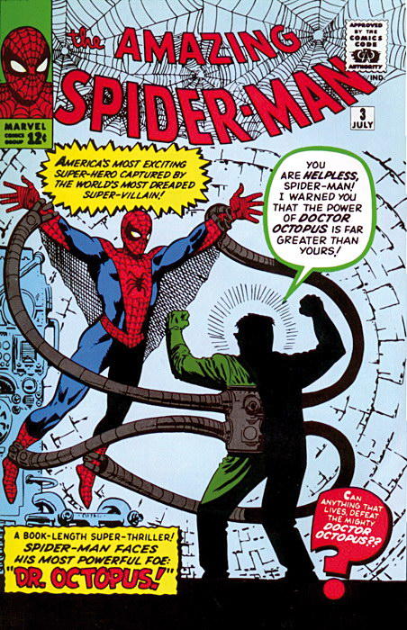
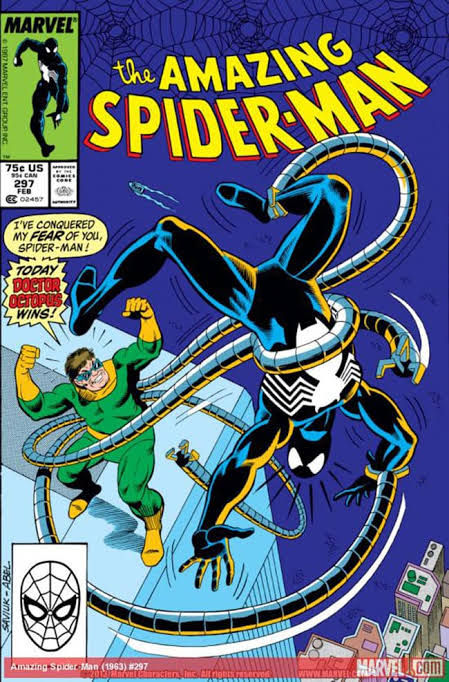
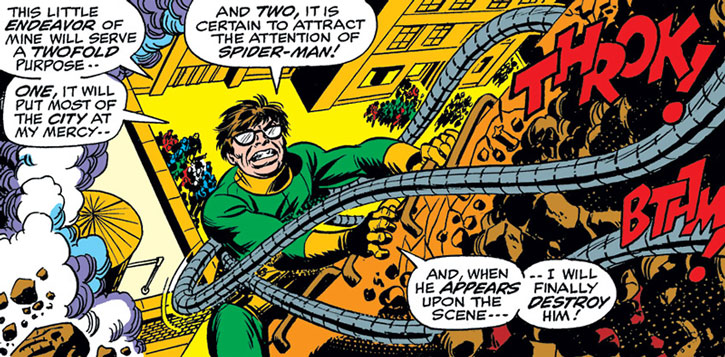

Spider-Man|
El Duende Verde |
El Hombre de Arena|
Electro|
Mysterio|

¿Quién es el Doctor Octopus? (Perfil Biográfico Completo)
Doctor Octopus (Doc Ock), cuyo nombre real es el Dr. Otto Gunther Octavius, es uno de los intelectos más brillantes, peligrosos y calculadores de todo el universo de Marvel Comics. Es mundialmente reconocido por ser el fundador estratégico de Los Seis Siniestros y por ser el primer supervillano que derrotó contundentemente a Spider-Man en combate cuerpo a cuerpo.
Nacido en Schenectady, Nueva York, Otto creció en un entorno familiar turbulento: un padre obrero abusivo (Torbert Octavius) y una madre sobreprotectora (Mary Octavius) que lo presionaba de forma obsesiva para destacar académicamente. Aislado de los jóvenes de su edad, Otto se refugió en la ciencia, graduándose con honores y convirtiéndose en un físico nuclear e inventor de renombre mundial respetado por la comunidad científica internacional.
El Accidente y la Mutación Psicomecánica
Para poder manipular isótopos radiactivos peligrosos a una distancia segura durante sus experimentos de energía atómica, Octavius diseñó un arnés pectoral con cuatro brazos mecánicos articulados:
- El accidente en el laboratorio: Durante un experimento crítico en el Centro de Investigación Atómica de Estados Unidos, una fuga de radiación provocó una explosión química masiva. El calor extremo fundió el arnés de titanio directamente a la piel, tórax y columna vertebral de Octavius.
- La transformación neurobiológica: La radiación mutó su cerebro, permitiéndole crear un enlace cibernético y psíquico permanente con los tentáculos mecánicos. Puede controlar los cuatro brazos con la misma fluidez y velocidad mental con la que mueve sus propios brazos biológicos, incluso cuando los tentáculos están separados físicamente de su cuerpo a gran distancia.
- Daño psicópata y megalomanía: El trauma de la explosión y la alteración de sus vías neuronales destruyeron su moderación moral. El humilde y reservado científico se transformó en un megalómano obsesionado con financiar sus experimentos mediante el crimen y demostrar su superioridad intelectual sobre la humanidad.

Creadores Detrás del Personaje y su Concepto Visual:
- Stan Lee (Guionista y Editor): Concibió al personaje como un "espejo oscuro" e intelectual de Peter Parker. Quería un villano que no fuera un monstruo deforme ni un asesino común, sino un erudito cuya brillantez científica fuera su mayor arma destructiva.
- Steve Ditko (Dibujante y Co-creador): Diseñó su icónica apariencia física: corte de tazón, gafas de sol con lentes redondas, cuerpo robusto y un traje verde con amarillo. Lo equipó con cuatro tentáculos metálicos telescópicos terminados en tenazas de tres garras capaces de elevar toneladas de peso.

Apareció por primera vez en The Amazing Spider-Man #3 (julio de 1963), lo que lo convirtió en el tercer supervillano al que se enfrentó Peter Parker.
Especificaciones Técnicas del Arnés y los Tentáculos
La cibernética de Otto Octavius convierte su cuerpo frágil en una máquina de combate devastadora:
- Composición metálica: Diseñados originalmente en una aleación ligera de titanio e invar, y posteriormente reconstruidos en algunas arcos con **Adamantium** (el mismo metal indestructible de Wolverine).
- Fuerza y alcance: Cada brazo mecánico puede extenderse hasta más de 7 metros y es capaz de levantar más de 8 toneladas de peso de forma independiente, permitiéndole volcar tanques blindados o demoler edificios.
- Velocidad de respuesta: Responden a impulsos nerviosos cerebrales en microsegundos, permitiéndole golpear a velocidades sobrehumanas, bloquear proyectiles y escalar rascacielos a gran velocidad como un pulpo metálico.
- Herramientas integradas: Las pinzas de tres garras pueden girar a 360 grados como taladros de alta presión, e incluyen sensores de radiación, lásers de corte y cámaras microscópicas.

¿Cómo y por qué surgió la idea? (El Espejo Oscuro de Peter Parker)
- El contrapunto de la ciencia: Lee y Ditko querían explorar qué le sucede a una mente privilegiada cuando carece de ética y empatía. Mientras Peter Parker utiliza su intelecto para ayudar a otros bajo el principio de responsabilidad, Otto Octavius utiliza el suyo exclusivamente para el beneficio personal y la vanidad.
- Fundador de Los Seis Siniestros (1964): Al darse cuenta de que no podía vencer a Spider-Man en solitario debido a la agilidad del héroe, Octavius demostró sus dotes de liderazgo al reunir a Electro, Sandman, Mysterio, Kraven el Cazador y el Buitre en The Amazing Spider-Man Annual #1.
- La Saga del Spider-Man Superior (*The Superior Spider-Man* - 2013): En un acontecimiento histórico escrito por Dan Slott, un Octavius agonizante logró intercambiar su mente con el cuerpo de Peter Parker. Al vivir los recuerdos de Peter y comprender la lección del Tío Ben, Otto decidió continuar el legado del héroe, jurando ser un "Spider-Man Superior" utilizando tecnología avanzada y drones de vigilancia por toda Nueva York.
Conclusión
El Doctor Octopus destaca por ser la mayor amenaza mental e intelectual a la que se enfrenta Spider-Man. Más allá de la formidable fuerza física de sus tentáculos mecánicos, es la fría brillantez táctica, la capacidad estratégica y la arrogancia sin límites de Otto Octavius lo que demuestra que el peligro más aterrador no proviene de la fuerza bruta, sino de una mente genialmente despiadada.
